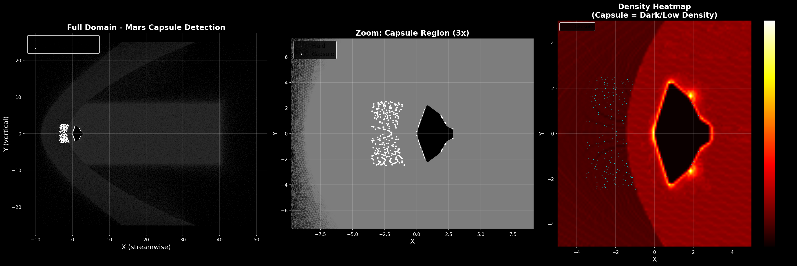
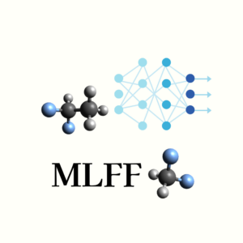
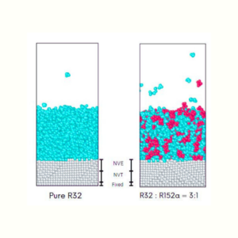
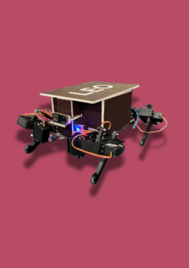
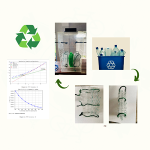

Research Experience [Google Scholar]

INN-FF: A Scalable and Efficient Machine Learning Potential for Molecular Dynamics

Molecular dynamics study of evaporation of low-GWP refrigerants over sinusoidal nanostructured surface
Under review at International Journal of Refrigeration

Molecular Dynamics Study of Liquid Condensation on Nano-structured Sinusoidal Hybrid Wetting Surfaces
9th BSME International Conference on Thermal Engineering (ICTE) 2024 | Conference proceedings to be published by AIP (American Institute of Physics)

Design and Development of Leo: An Affordable Biomechanically Inspired Quadruped Robot with Cognitive Abilities
IEEE International Conference on Power, Electrical, Electronics and Industrial Applications 2024 | Conference proceedings to be published in IEEE Xplore Digital Library
Accepted for presentation at the International Mechanical Engineering Congress & Exposition (IMECE) 2024 Undergrad Expo organized by the American Society of Mechanical Engineers (ASME)

Investigation of Eco-Friendly PET Plastic Waste and Coated Jute Fiber as Alternative Fill Material for Cross-Flow Induced Draft Cooling Towers
9th BSME International Conference on Thermal Engineering (ICTE 2024) — Funded by the American Society of Heating, Refrigerating and Air-Conditioning Engineers (ASHRAE) through an Undergraduate Equipment Grant